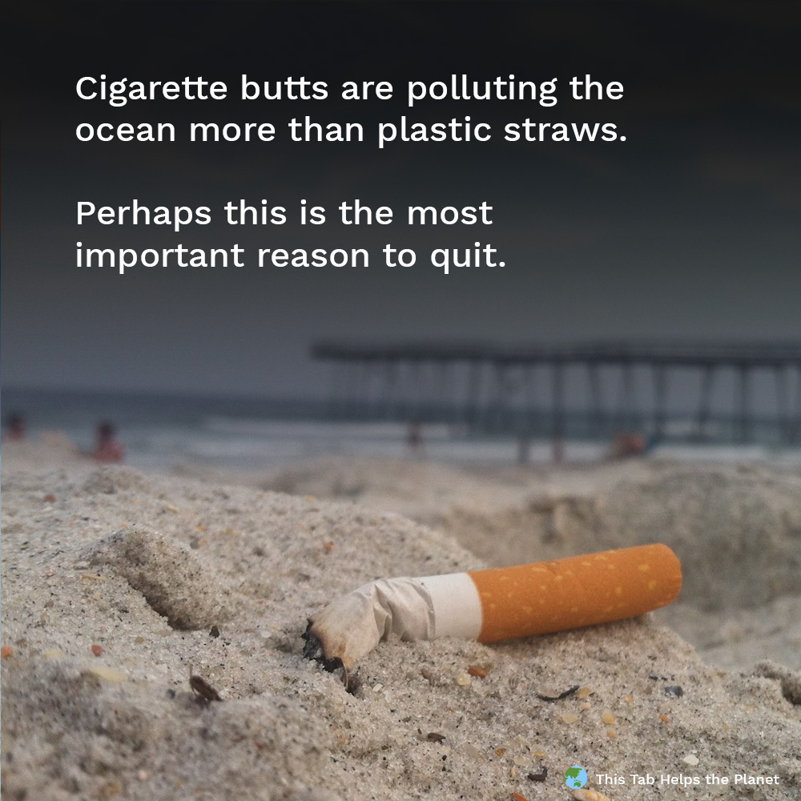

How does smoking affect the enironment?Smoking cigarettes can lead to land, coastal, and water pollution. When you are done smoking cigarettes most people don't bother to throw away the actual cigarette. You often see them on the floor of beachse and even worse in our ocean. Because of this it can pollute the soil land which makes it harmful to wildlife. You can see the effect of pollution on the left.

How can we make it better? To make it better you can enocurage people to quit. Spread awareness about the potiential health risks they can develop due to smoking. You can also promote prevention and follow campaigns. Another thing you can do is expand the control policies of smoking.